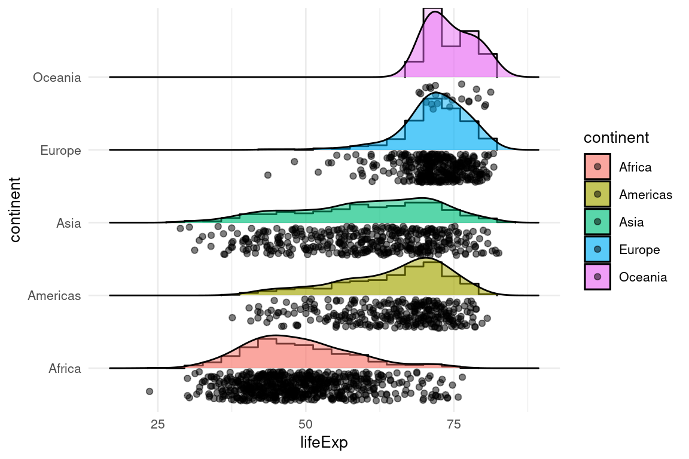

if (!require('cowplot')) install.packages('cowplot'); library('cowplot')
if (!require('dplyr')) install.packages('dplyr'); library('dplyr')
if (!require('gapminder')) install.packages('gapminder'); library('gapminder')
if (!require('ggplot2')) install.packages('ggplot2'); library('ggplot2')
if (!require('ggridges')) install.packages('ggridges'); library('ggridges')
if (!require('haven')) install.packages('haven'); library('haven')
if (!require('inspectdf')) install.packages('inspectdf'); library('inspectdf')
if (!require('tidyr')) install.packages('tidyr'); library('tidyr')5 Análisis de datos exploratorio
Paquetes para este capítulo
En este capítulo vamos a aplicar lo que hemos aprendido en los dos capítulos anteriores, combinando transformación de datos con visualización para entender nuestras bases de datos, buscar patrones interesantes, etc. Podéis encontrar una introducción más completa en el manual R 4 data science - exploratory data analysis.
5.1 Visualizando distribuciones
Para visualizar la distribución de nuestras variables, tendremos que seguir estrategias diferentes dependiendo de si se trata de variables categóricas o continuas.
5.1.1 Variables categóricas

5.1.2 Variables continuas
Para ver la distribución de una variable podemos empezar con un histograma sencillo.
ggplot(gapminder, aes(lifeExp)) +
geom_histogram(binwidth = 1)
summarise() nos permite ver medias, medianas, etc.
Alternativamente, hay funciones como skimr::skim() que nos muestran una panorámica muy util de las variables de nuestro dataframe. Corre la función en tu Consola para ver el output completo.
skimr::skim(gapminder)| Name | gapminder |
| Number of rows | 1704 |
| Number of columns | 6 |
| _______________________ | |
| Column type frequency: | |
| factor | 2 |
| numeric | 4 |
| ________________________ | |
| Group variables | None |
Variable type: factor
| skim_variable | n_missing | complete_rate | ordered | n_unique | top_counts |
|---|---|---|---|---|---|
| country | 0 | 1 | FALSE | 142 | Afg: 12, Alb: 12, Alg: 12, Ang: 12 |
| continent | 0 | 1 | FALSE | 5 | Afr: 624, Asi: 396, Eur: 360, Ame: 300 |
Variable type: numeric
| skim_variable | n_missing | complete_rate | mean | sd | p0 | p25 | p50 | p75 | p100 | hist |
|---|---|---|---|---|---|---|---|---|---|---|
| year | 0 | 1 | 1979.50 | 17.27 | 1952.00 | 1965.75 | 1979.50 | 1993.25 | 2007.0 | ▇▅▅▅▇ |
| lifeExp | 0 | 1 | 59.47 | 12.92 | 23.60 | 48.20 | 60.71 | 70.85 | 82.6 | ▁▆▇▇▇ |
| pop | 0 | 1 | 29601212.32 | 106157896.74 | 60011.00 | 2793664.00 | 7023595.50 | 19585221.75 | 1318683096.0 | ▇▁▁▁▁ |
| gdpPercap | 0 | 1 | 7215.33 | 9857.45 | 241.17 | 1202.06 | 3531.85 | 9325.46 | 113523.1 | ▇▁▁▁▁ |
Ejercicios
Variables individuales
Usando el DF mpg, visualiza la distribucion de las variables manufacturer, y hwy. Fijate que la primera es categórica, y la segunda continua.
Pista
Vas a tener que elegir entre geom_bar() y geom_histogram().
Puedes ver que pasa si usas el parámetro binwidth = 1 en geom_histogram().
Usamos geom_bar() para visualizar variables discretas:

Para variables continuas, geom_histogram():

Ejercicios avanzados
Usando como base éste código:
ggplot(gapminder, aes(lifeExp, fill = continent)) +
geom_histogram(binwidth = 1)¿Podrías replicar la visualización de abajo? Queremos mostrar un histograma por continente.
Lo mejor es dividir el proceso en varios pasos
1) Empieza con el histograma de arriba.
2) recuerda que puedes usar el parámetro fill (dentro de aes), para asignar un color de relleno por nivel de una variable categórica.
3) Finalmente, usando facetas podrás crear una gráfica para cada nivel de la variable categórica facet_wrap()!

¿Como podemos añadir el histograma general para poder entender donde se ubica cada continente?
La solución está en el capítulo 1
El paquete gghighlight es justo lo que necesitas

También queremos ver los descriptivos por continente, ordenados por el promedio:
#> # A tibble: 5 × 6
#> continent MEAN MEDIAN SD MAX MIN
#> <fct> <dbl> <dbl> <dbl> <dbl> <dbl>
#> 1 Africa 48.9 47.8 9.15 76.4 23.6
#> 2 Asia 60.1 61.8 11.9 82.6 28.8
#> 3 Americas 64.7 67.0 9.35 80.7 37.6
#> 4 Europe 71.9 72.2 5.43 81.8 43.6
#> 5 Oceania 74.3 73.7 3.80 81.2 69.15.1.3 Visualizando datasets completos
Cuando nos llega una nueva base de datos, una de las primeras cosas que haremos será familiarizarnos con los datos. Cómo se distribuyen, cual es la relación entre distintas variables, etc.
Convertimos la base a formato largo para poder filtrar los valores perdidos (i.e. 999), y crear una columna donde introducir únicamente valores numéricos:
d <- gapminder |>
pivot_longer(everything(), values_transform = list(value = as.character)) |>
filter(value != 999) |> # Si existiera algun codigo para missing values, filtrar
mutate(value_NUM = as.numeric(value))Visualiza las variables numéricas usando la variables value_NUM que hemos creado:
d |>
drop_na(value_NUM) |>
ggplot(aes(value_NUM)) +
facet_wrap(~ name, scales = "free") +
geom_histogram(bins = 15) #+ scale_x_log10()
Visualiza variables no numéricas. Para ello, nos quedamos solo con aquellas filas donde value_NUM es una valor perdido. Esto es porque cuando antes hicimos mutate(value_NUM = as.numeric(value)), aquellos valores de value que no se pudieron convertir a numérico, quedaron como NA en value_NUM:
d |>
drop_na(value) |>
filter(is.na(value_NUM)) |>
ggplot(aes(value)) +
facet_wrap(~ name, scales = "free") +
geom_bar() +
coord_flip()
Hay algunos paquetes que ayudan a la exploración inicial de bases de datos, localización de datos perdidos, etc. Por ejemplo {inspectdf}.
5.2 Covariación
5.2.1 Variable categórica y continua
Podemos contar el numero de elementos por nivel de la variable o ver densidad, etc. Esto funciona bien si tenemos pocos niveles de la variable categórica.
ggplot(gapminder, aes(lifeExp, colour = continent)) +
geom_freqpoly(binwidth = 2)
Podemos usar geom_density_ridges() para combinar puntos con distribuciones:
ggplot(gapminder, aes(lifeExp, continent, fill = continent)) +
ggridges::geom_density_ridges(
stat = "binline",
bins = 20,
scale = 0.95,
draw_baseline = FALSE,
alpha = .3
) +
ggridges::geom_density_ridges(
jittered_points = TRUE,
position = "raincloud",
alpha = 0.5,
scale = 0.9
)
¿Qué estamos viendo exáctamente arriba? Hay un punto por cada pais, y por cada año, lo que da lugar aalgo bien dificil de interpretar. Podemos ver los datos únicamente del último año:
gapminder |> group_by(year) |> summarise(n())
#> # A tibble: 12 × 2
#> year `n()`
#> <int> <int>
#> 1 1952 142
#> 2 1957 142
#> 3 1962 142
#> 4 1967 142
#> 5 1972 142
#> 6 1977 142
#> # ℹ 6 more rows
ggplot(gapminder |> filter(year > 1995),
aes(lifeExp, continent, fill = continent)) +
ggridges::geom_density_ridges(
stat = "binline",
bins = 20,
scale = 0.95,
draw_baseline = FALSE,
alpha = .3
) +
ggridges::geom_density_ridges(
jittered_points = TRUE,
position = "raincloud",
alpha = 0.5,
scale = 0.9
)
5.2.2 Ejercicio avanzado - Introducción
En este ejercicio vamos a intentar mostrar la como la distribución de esperanza de vida ha cambiado a lo largo del tiempo. Para ello, usando la base gapminder, compararemos las distribuciones por continente del año 1952 con el año 2007.
Empezamos creando dos gráficos. En cada uno filtramos por el año deseado (e.g. filter(year == 1952)). Fíjate que usamos scale_x_continuous(n.breaks = 10, limits = c(20, 90)) para que ambas gráficas compartan la misma escala en el eje x:
A = ggplot(gapminder |> filter(year == 1952),
aes(lifeExp, continent, fill = continent)) +
ggridges::geom_density_ridges(
stat = "binline",
bins = 20,
scale = 0.95,
draw_baseline = FALSE,
alpha = .3
) +
ggridges::geom_density_ridges(
jittered_points = TRUE,
position = "raincloud",
alpha = 0.5,
scale = 0.9
) +
theme(legend.position = "none") +
scale_x_continuous(n.breaks = 10, limits = c(20, 90)) +
ggtitle("1952")
B = ggplot(gapminder |> filter(year == 2007),
aes(lifeExp, continent, fill = continent)) +
ggridges::geom_density_ridges(
stat = "binline",
bins = 20,
scale = 0.95,
draw_baseline = FALSE,
alpha = .3
) +
ggridges::geom_density_ridges(
jittered_points = TRUE,
position = "raincloud",
alpha = 0.5,
scale = 0.9
) +
theme(legend.position = "none") +
scale_x_continuous(n.breaks = 10, limits = c(20, 90)) +
ggtitle("2007")
cowplot::plot_grid(A, B)
Para visualizar la diferencia entre 2007 y 1952, podemos calcular primero cuanto ha cambiado la esperanza de vida en cada pais de cada continente, y crear una gráfica con esa variable:
# Cálculo de la diferencia entre el máximo y mínimo de lifeExp para cada country.
# Incluimos continent en group_by() para poder usar esa variable en la gráfica
DF_gapminder_max_min = gapminder |>
group_by(continent, country) |>
summarise(lifeExp = max(lifeExp) - min(lifeExp))
ggplot(DF_gapminder_max_min, aes(lifeExp, continent, fill = continent)) +
ggridges::geom_density_ridges(
stat = "binline",
bins = 20,
scale = 0.95,
draw_baseline = FALSE,
alpha = .3
) +
ggridges::geom_density_ridges(
jittered_points = TRUE,
position = "raincloud",
alpha = 0.5,
scale = 0.9
) +
theme(legend.position = "none") +
ggtitle("Diferencia entre max y min por país")
5.2.3 Ejercicio
Arriba estamos restando la esperanza de vida máxima y mínima de cada pais, pero querríamos ver la diferencia entre 2007 y 1952 ¿Podrías rehacer el cálculo para mostrar la diferencia entre 2007 y 1952?
Pista
1. Crear un DF para cada 2007 y otro para 1952, renombrando la variable lifeExp (e.g. max_lifeExp y min_lifeExp, respectivamente)
2. Usando la funcion full_join(), juntamos ambas bases (tendras que usar el parametro by = c("country", "continent")).
3. Con mutate() calculamos la diferencia.

5.2.4 Dos variables categóricas
Podemos contar el número de valores para los niveles de dos variables categóricas con count():
diamonds |>
count(color, cut)
#> # A tibble: 35 × 3
#> color cut n
#> <ord> <ord> <int>
#> 1 D Fair 163
#> 2 D Good 662
#> 3 D Very Good 1513
#> 4 D Premium 1603
#> 5 D Ideal 2834
#> 6 E Fair 224
#> # ℹ 29 more rowsUna manera de visualizar esto es con geom_tile():

5.2.5 Dos variables continuas
Una herramienta esencial para ver como covarian dos variables continuas es un scatterplot. Usaremos geom_point():
ggplot(gapminder, aes(lifeExp, gdpPercap)) +
geom_point()
Si añadimos color y cambiamos a escala logarítmica, podemos hacernos una mejor idea:
ggplot(gapminder, aes(lifeExp, gdpPercap, color = continent)) +
geom_point(alpha = 1 / 2) +
scale_y_log10()Con geom_boxplot() podemos hacernos una idea rápida de las distribuciones:
ggplot(gapminder, aes(lifeExp, gdpPercap)) +
geom_boxplot(mapping = aes(group = cut_width(lifeExp, 10))) +
scale_y_log10()
5.2.6 Ejercicio covariación 2
Usando el DF mpg, visualiza la covariación entre:
-
manufactureryhwy -
classyhwy -
hwyycty
Visualizando una variable categórica y una continua
Visualizando pares de variables continuas!


5.3 Ejercicios finales
5.3.1 Ejercicio exploración base nueva
Usando la base del paper Cancer Screening Risk Literacy of Physicians in Training, haz un primer análisis exploratorio que incluya:
- histogramas de todas las variables numéricas y no-numéricas
- scatterplots de la relación entre comprensión y numeracy, y entre comprensión y screenbeliefs
Puedes ir al enlace anterior y descargar el archivo Cancer screening risk literacy R1.sav en la carpeta Data and results, o directamente usar el codigo de abajo.
Como visualizar todas las variables


Bibliografía
Wickham, H., & Grolemund, G. (2016). R for data science: import, tidy, transform, visualize, and model data. O’Reilly Media, Inc. https://r4ds.had.co.nz/